绝命毒师
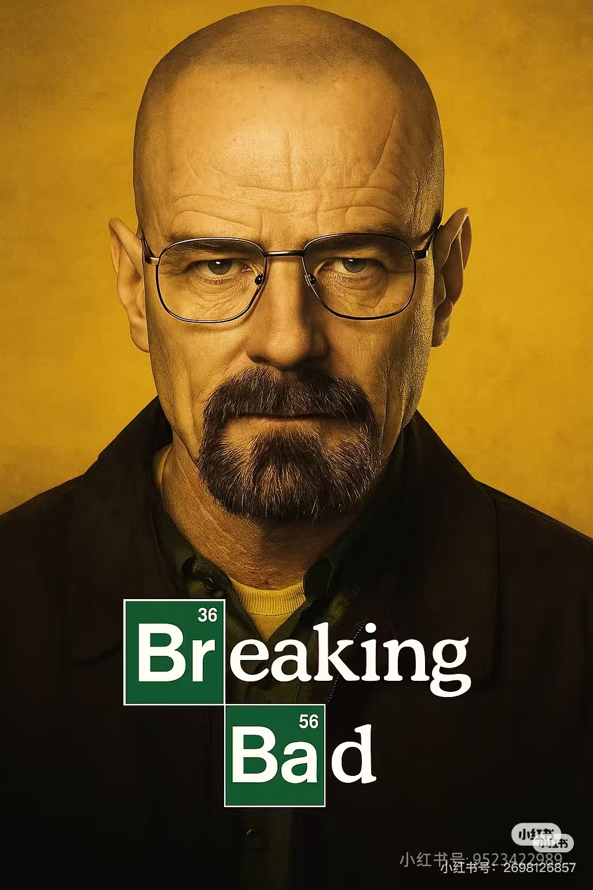
沃尔特·怀特
主角 / 海森堡
高中化学老师 → 毒枭
原本是平凡的高中化学老师，被诊断出癌症后开始制毒，逐渐堕落为冷酷无情的毒枭"海森堡"。

主角 / 海森堡
高中化学老师 → 毒枭
原本是平凡的高中化学老师，被诊断出癌症后开始制毒，逐渐堕落为冷酷无情的毒枭"海森堡"。
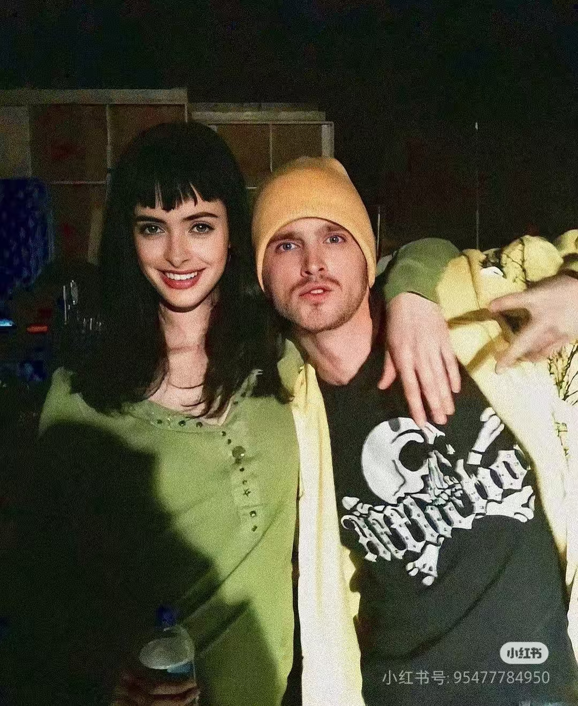
搭档 / 制毒者
街头毒贩 → 良心觉醒者
沃尔特的学生和制毒搭档，在毒品世界中挣扎求生，经历多次悲剧后寻求救赎的复杂角色。
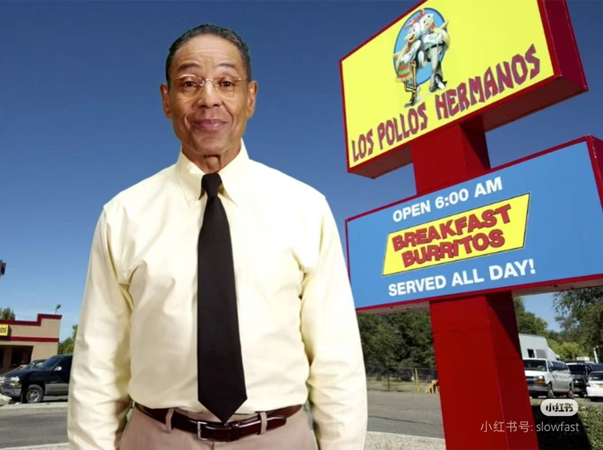
大毒枭 / 商人
炸鸡店老板 / 毒品帝国首脑
表面上经营炸鸡连锁店，实则是精明冷静的毒品帝国首脑，以商业思维运营犯罪组织。
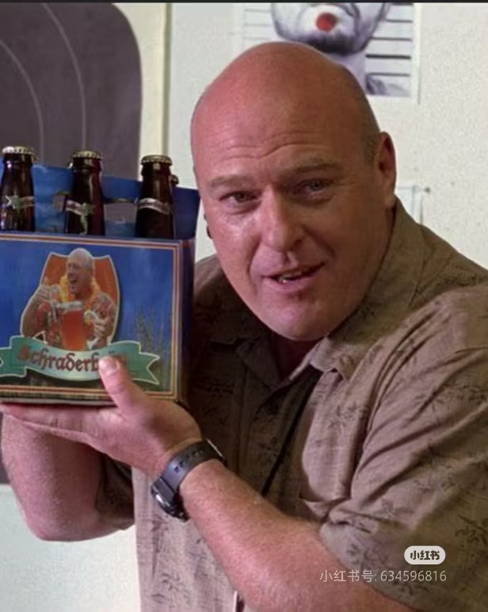
DEA探员
沃尔特的连襟 / 海森堡追捕者
DEA缉毒局探员，沃尔特的连襟，表面粗犷实则敏锐，最终追捕"海森堡"却不知其真实身份。
律师
罪犯的"问题解决者"
为罪犯服务的狡猾律师，精通法律漏洞，帮助沃尔特解决各种法律问题，后有自己的衍生剧。
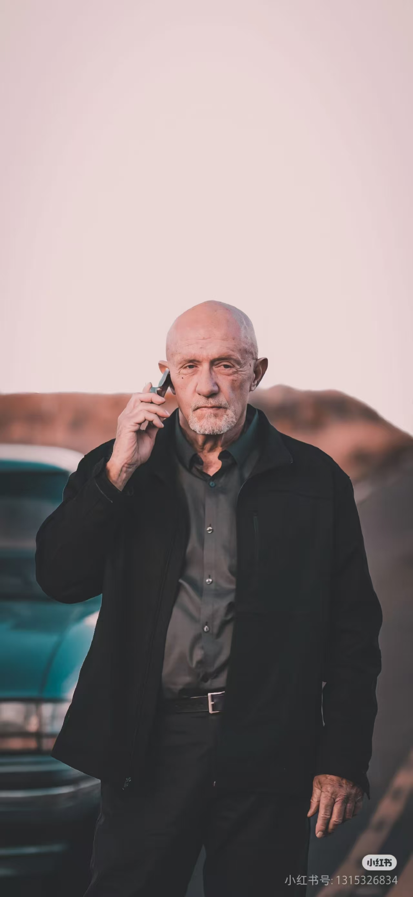
安全顾问 / 清道夫
前警察 → 职业罪犯
前警察转行的职业罪犯，高效专业的"清道夫"，有着自己的道德准则，是古斯塔沃的得力助手。
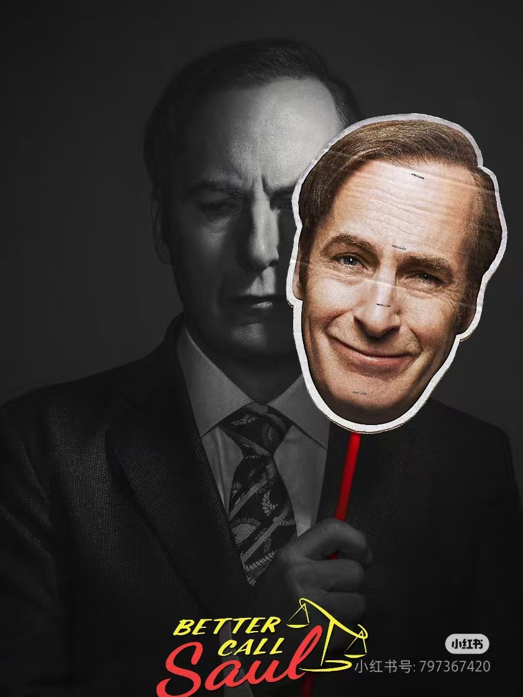
主角 / 索尔·古德曼
小律师 → 索尔·古德曼
查克的弟弟，原本想成为正直律师，但在现实压力和兄弟阴影下逐渐蜕变为狡猾的索尔·古德曼。
律师 / 吉米的女友
理想主义者 → 现实妥协者
才华横溢的律师，吉米的女友和合伙人，在职业道德与对吉米的感情间挣扎，最终走向黑暗。
高级合伙人 / 吉米的哥哥
知名律师 / 电磁过敏症患者
吉米的哥哥，知名律师，患有电磁过敏症，对吉米既爱又鄙视，是吉米转变的关键因素。
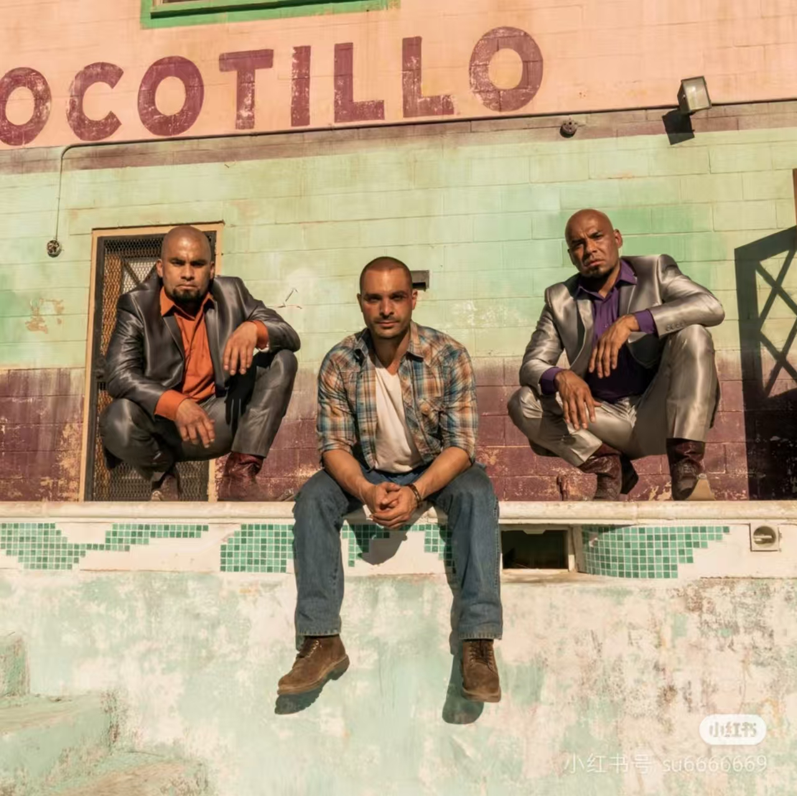
犯罪组织成员
萨拉曼卡家族成员 → 双重间谍
萨拉曼卡家族的成员，在犯罪世界中挣扎求生，试图保护父亲并寻找出路，最终成为双重间谍。
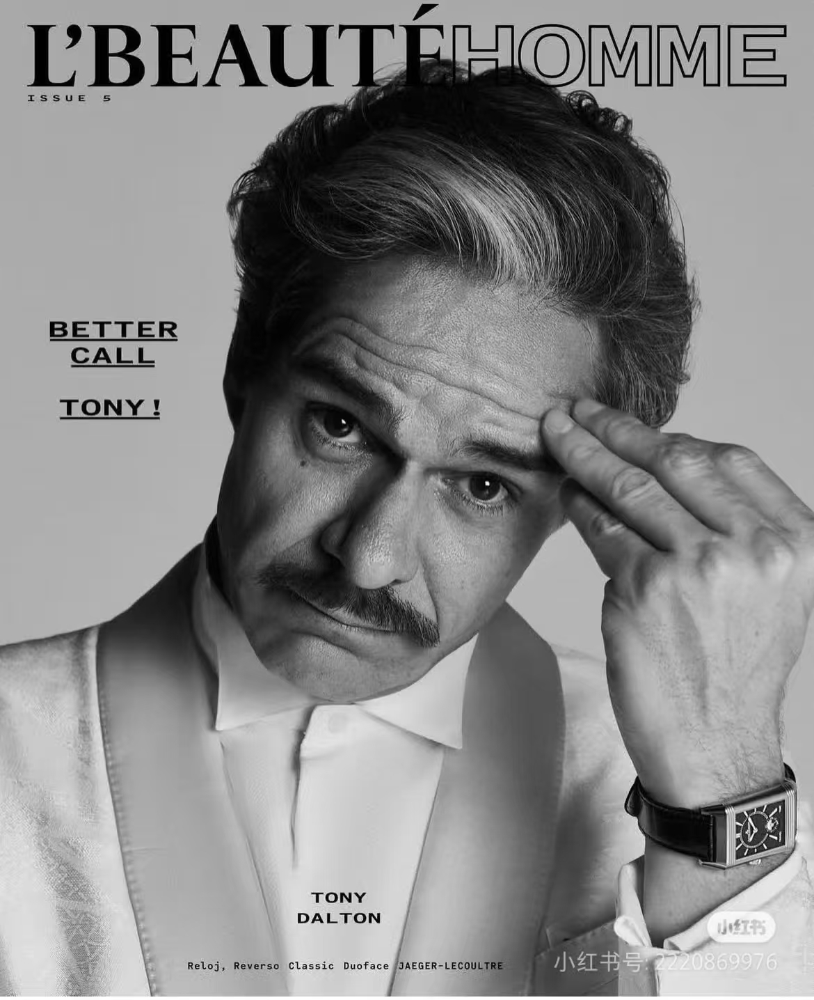
毒枭
萨拉曼卡家族成员
萨拉曼卡家族的冷血成员，极度危险且直觉敏锐，不信任任何人，对家族有着扭曲的忠诚。
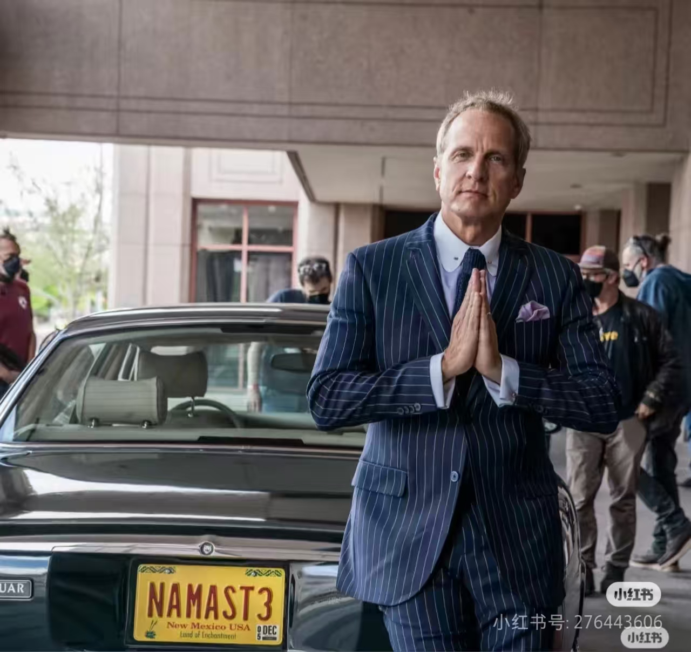
律所合伙人
HHM律所管理者
HHM律所的合伙人，表面光鲜的成功律师，实则内心复杂，成为麦吉尔兄弟冲突的牺牲品。
主角 / 数学老师
中年数学老师
表面上温文尔雅的少年宫数学老师，实则有着极度压抑的内心和精密的犯罪头脑。"您看我还有机会吗？"
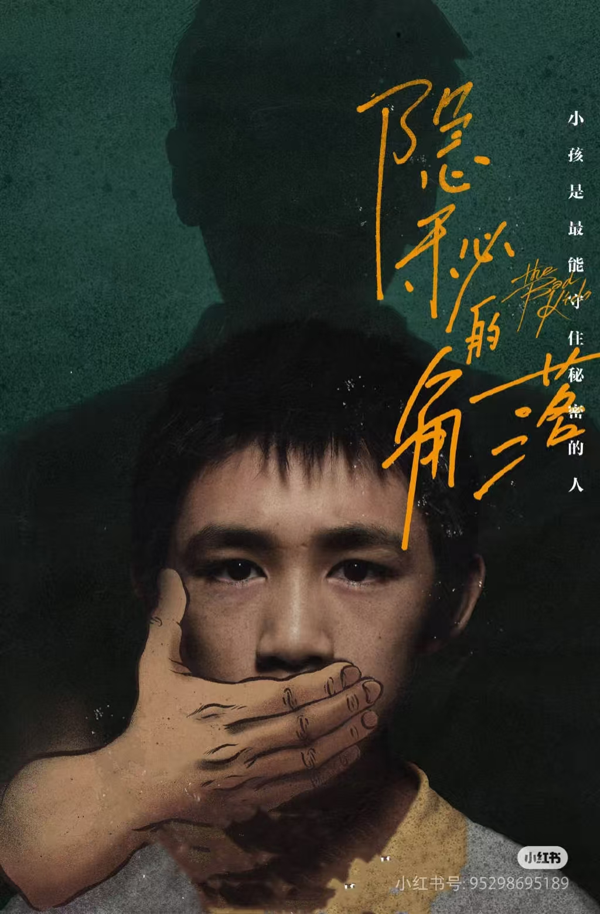
主角 / 初中生
初中一年级学生
表面上是个听话的学霸，实则心思缜密、早熟聪明，在成人的罪恶与孩子的纯真之间挣扎。
重要角色 / 福利院孩子
少年时期
从福利院逃出来的孩子，性格冲动但讲义气，一直在寻找自己的父亲，渴望得到家庭温暖。
主角 / 核物理学家
苏联时期
苏联核物理学家，切尔诺贝利事故调查委员会成员，为揭露真相不惜与体制对抗，最终选择以死明志。
主角 / 海盗船长
海盗黄金时代
"黑珍珠号"船长，狡猾、机智、酗酒但关键时刻总能化险为夷。经典台词："先生们，女士们，你们将永远记住这一天..."
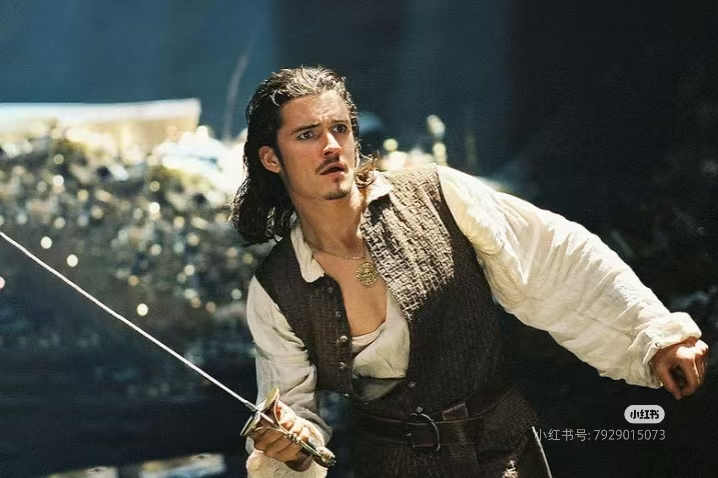
主角 / 铁匠→海盗
海盗黄金时代
原本是正直的铁匠学徒，为拯救爱人伊丽莎白而踏上冒险之旅，最终成为飞翔的荷兰人号船长。
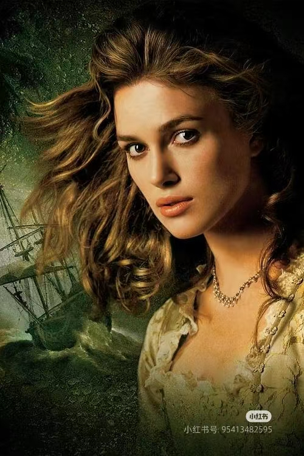
主角 / 总督女儿→海盗王
海盗黄金时代
总督的女儿，不甘于贵族小姐的生活，渴望冒险和自由，最终成为九大海盗王之一。
重要角色 / 海盗船长
海盗黄金时代
原黑珍珠号大副，背叛杰克成为船长，经历多次生死，性格复杂，亦敌亦友，最终为救女儿牺牲。
反派 / 飞翔的荷兰人号船长
神话时代
飞翔的荷兰人号船长，因爱情背叛而变得残忍，控制着海洋的生死，经典形象是章鱼脸。
反派 / 沉默玛丽号船长
亡灵海盗
西班牙海军军官，因追捕海盗被杰克陷害变成亡灵，率领沉默玛丽号誓要向所有海盗复仇。
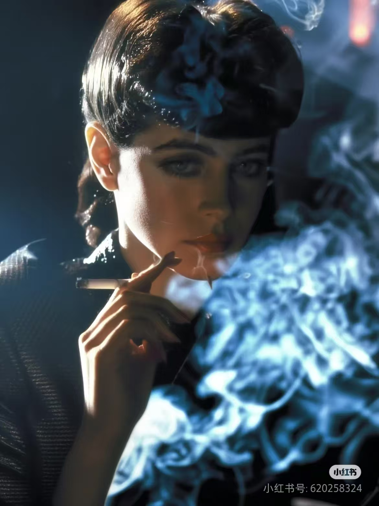
银翼杀手
复制人追捕者
追捕逃亡复制人的银翼杀手，在工作中逐渐质疑自己的身份和人性，最终与复制人产生共情。
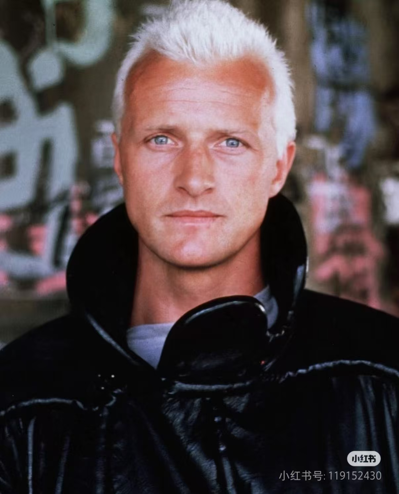
复制人领袖
Nexus-6型复制人
Nexus-6型复制人领袖，拥有超强体能和智慧，为延长自己和其他复制人的生命而战。
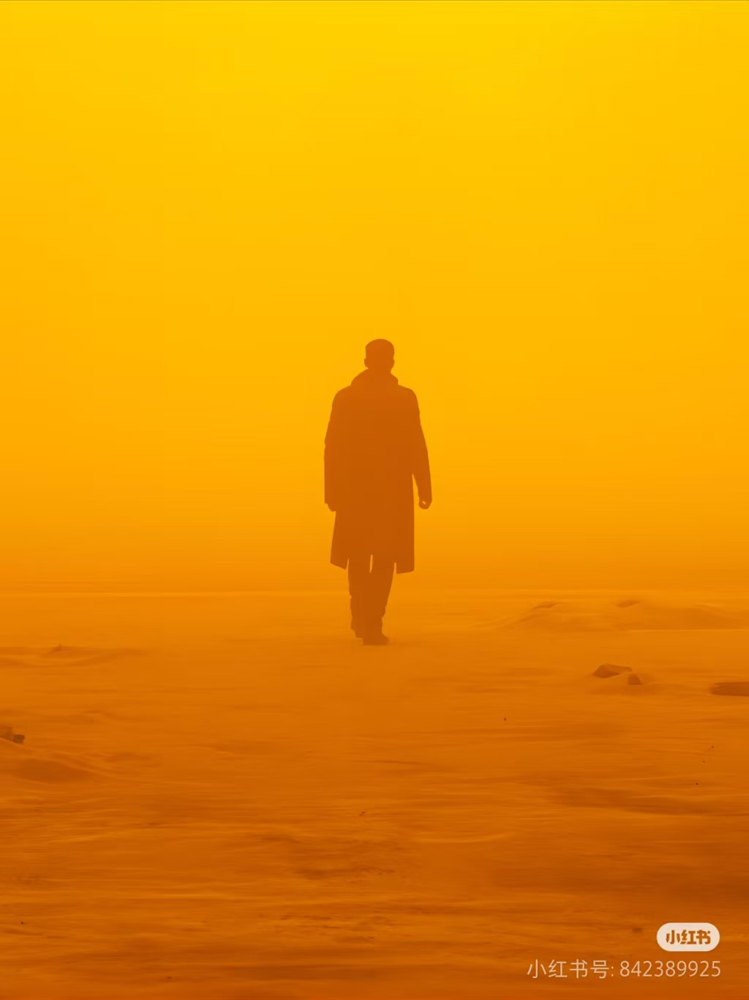
新一代银翼杀手
复制人猎人
新一代银翼杀手，复制人中的"异类"，在追捕任务中发现了可能改变世界的秘密和自己的身世之谜。
宇航员 / 父亲
前NASA飞行员
前NASA飞行员，为了人类生存和与女儿团聚而踏上星际旅程，最终在五维空间中拯救人类。
科学家 / 女儿
理论物理学家
库珀的女儿，继承父亲科学天赋的理论物理学家，最终解开重力方程，拯救了地球上的人类。
NASA负责人
物理学家
NASA秘密基地的负责人，制定了拯救人类的A计划和B计划，对库珀隐瞒了关键信息。
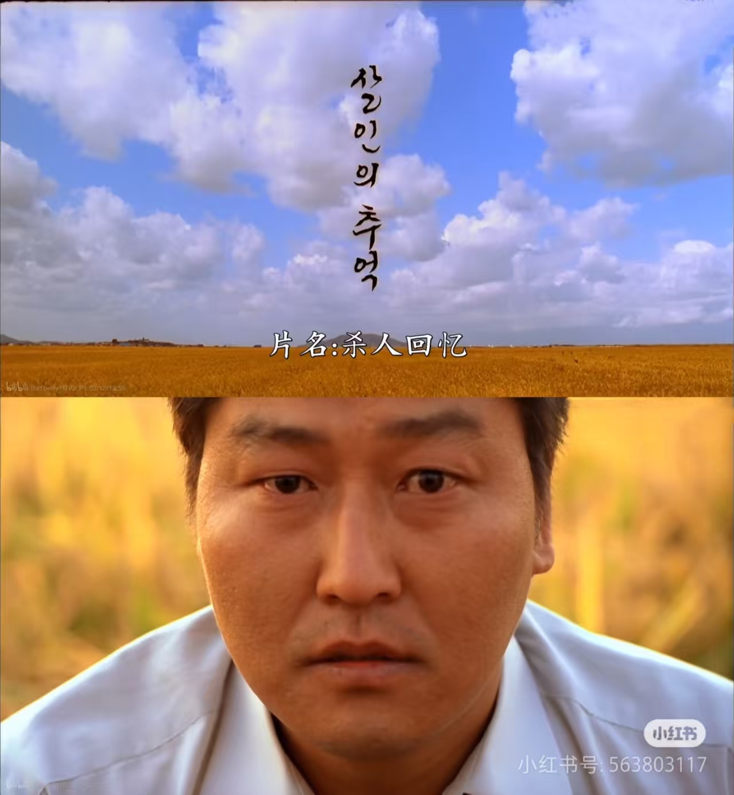
乡村警官
小镇警察
小镇警察，凭直觉和暴力手段办案，随着案件进展逐渐感到无力，最终放弃警察职业。
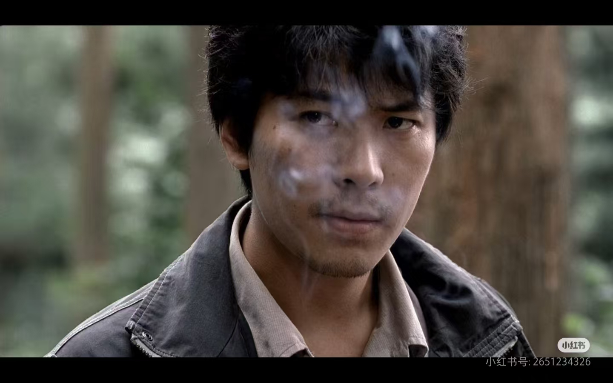
汉城警官
首尔派来的刑警
从首尔调来的刑警，相信科学证据和理性分析，但在案件面前也逐渐失去信心。
《宇宙探索》主编
落魄科幻杂志主编
落魄科幻杂志主编，痴迷寻找外星人，踏上荒诞又感人的西南之旅，最终理解生命意义。
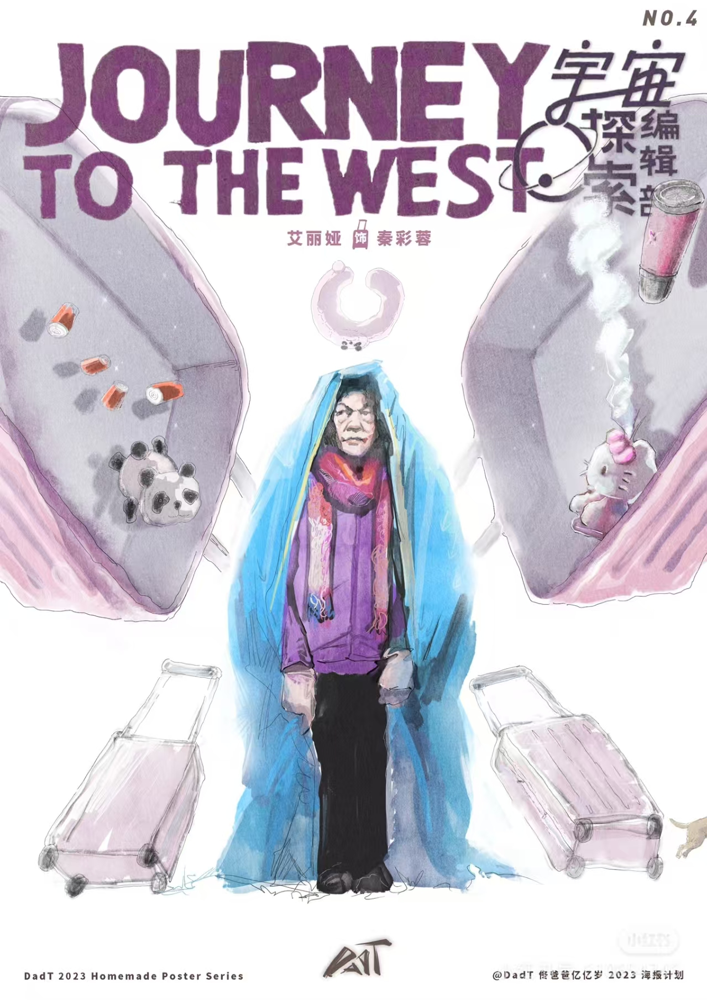
编辑部同事
现实主义者
编辑部的现实主义者，经常吐槽唐志军的不切实际，但始终默默支持着他的追寻。
主角 / 大难不死的男孩
霍格沃茨学生
大难不死的男孩，命中注定要与伏地魔对决，在霍格沃茨学习魔法并最终击败黑暗势力。
学霸 / 麻瓜出身
魔法部部长
麻瓜出身的顶尖学霸，凭借智慧和努力成为魔法界的重要人物，最终成为魔法部部长。
忠实朋友
韦斯莱家族成员
哈利最忠诚的朋友，来自温暖但贫穷的韦斯莱家族，在友谊中不断成长并找到自我价值。
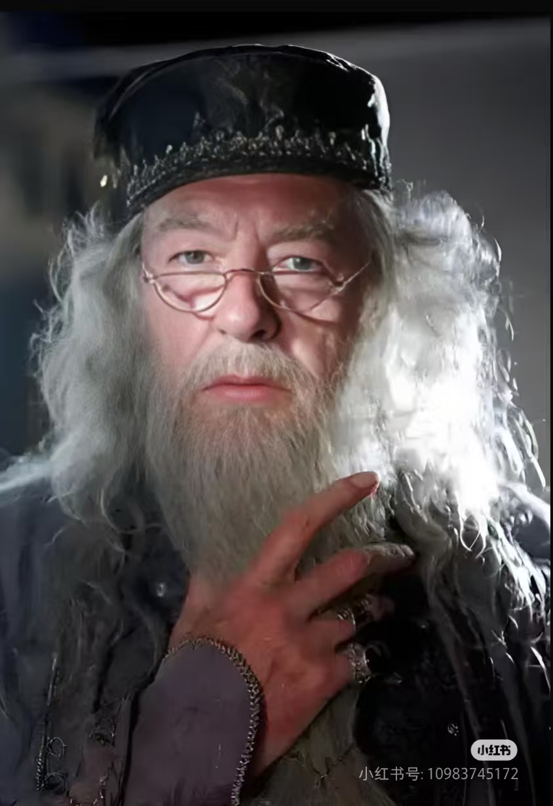
霍格沃茨校长
最伟大的巫师
霍格沃茨校长，当代最伟大的巫师，有着复杂的过去，为击败伏地魔制定长期计划。
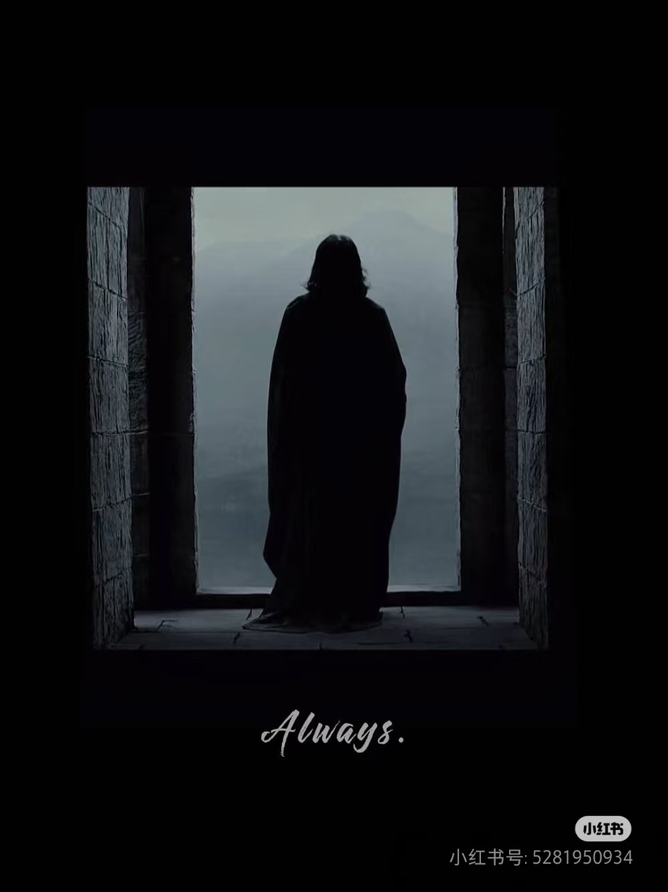
双面间谍
魔药课教授
表面冷酷的魔药课教授，实则是邓布利多的双面间谍，一生深爱莉莉·波特并为之牺牲。
反派 / 黑魔王
汤姆·里德尔
原名汤姆·里德尔，因恐惧死亡而追求永生，分裂灵魂制作魂器，成为最危险的黑巫师。
主角 / 宇航员
近未来
中国宇航员，在国际空间站工作，为了地球和人类的未来选择牺牲自己，与空间站一同撞向木星。
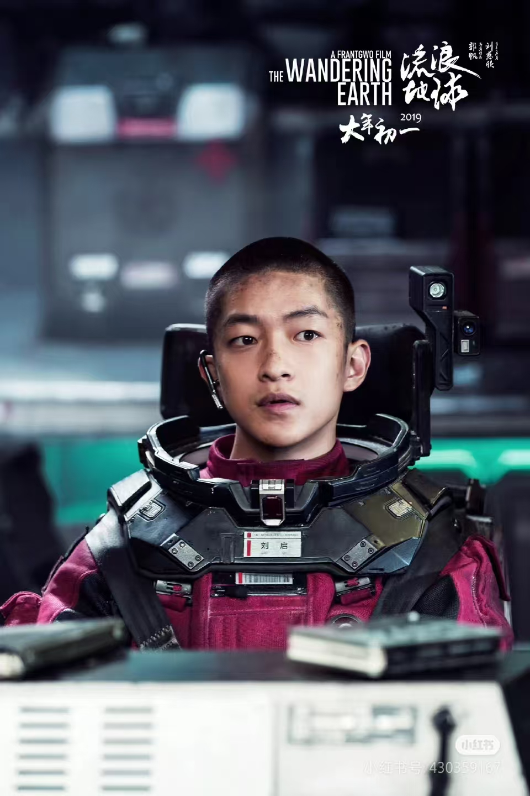
主角 / 救援队员
近未来
刘培强的儿子，表面叛逆实则内心善良，在末日危机中成长为有担当的救援队员。
主角 / 数字生命科学家
近未来
数字生命科学家，为了复活女儿丫丫而研究数字生命技术，在科学与伦理之间挣扎。

主角 / 中国外交官
近未来
中国外交官，在联合国代表中国发声，强调人类命运共同体，推动国际合作。
主角 / 武术宗师
清末民初
广东佛山武术宗师，宝芝林医馆馆主，行侠仗义，医术高超，以仁德服人。
女主角 / 留洋归来
清末民初
黄飞鸿的恋人，留洋归来的新式女性，思想开放，教黄飞鸿说英语、跳交谊舞。
主角 / 天才儿童
未来太空
6岁的天才儿童，被选中进入战斗学校培养成指挥官，却在不知情的情况下指挥了灭绝虫族的战争。
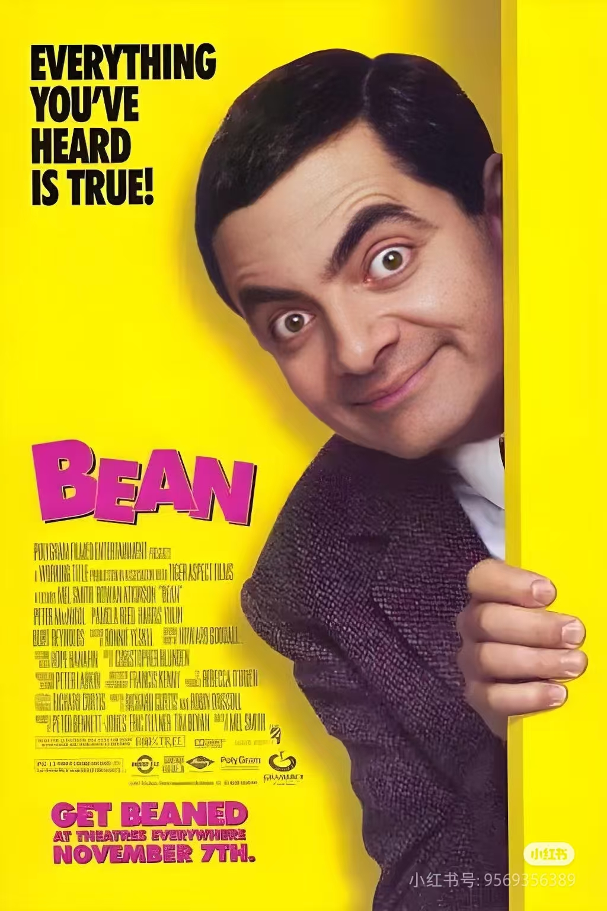
主角 / 搞笑角色
现代英国
总是惹出各种笑话的英国绅士，虽然行为笨拙但心地善良，有一只心爱的泰迪熊玩偶。
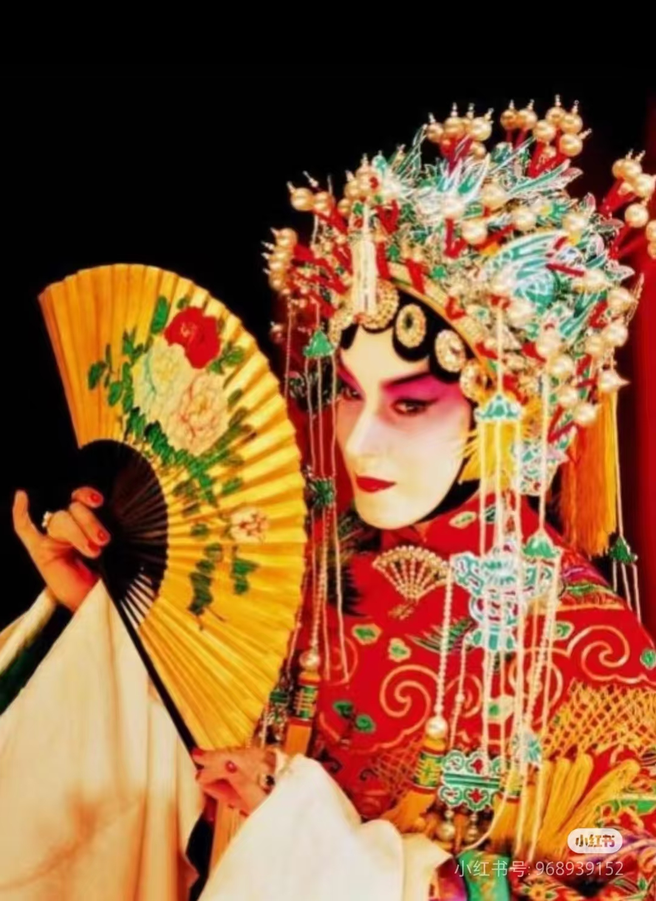
主角 / 京剧名旦
民国至文革
"我本是女娇娥，又不是男儿郎" - 一生痴迷于京剧艺术，人戏不分，最终在舞台上自刎。
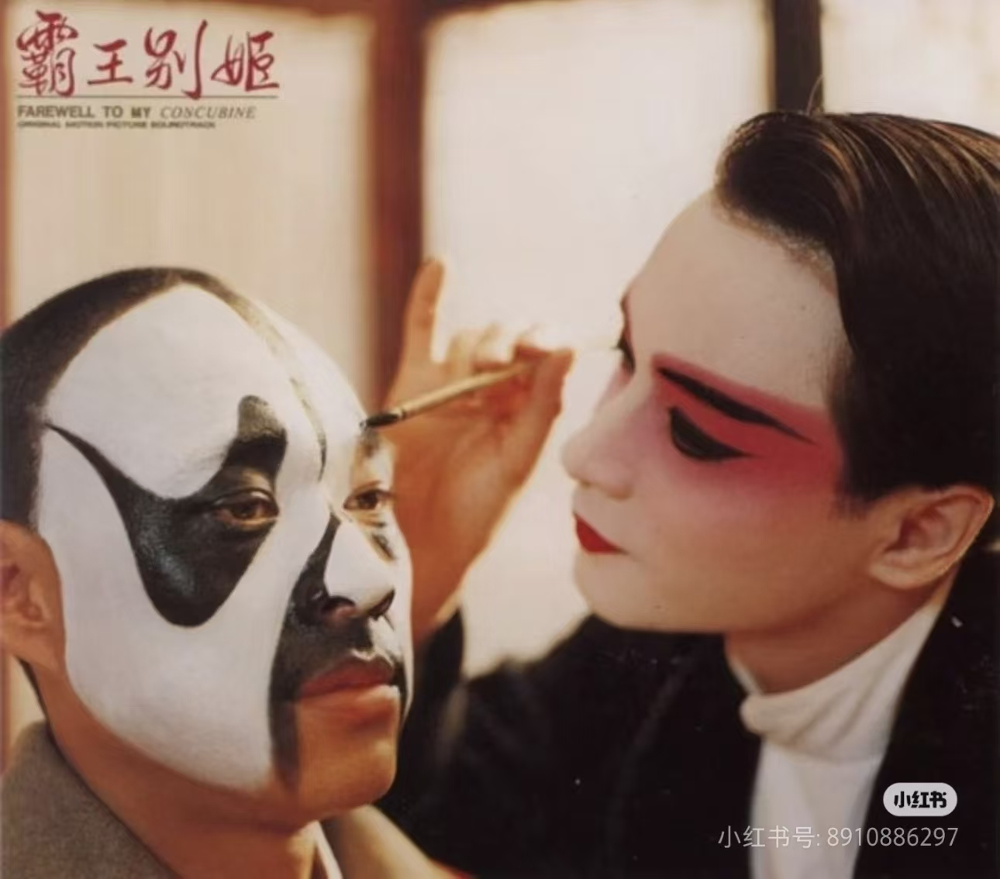
主角 / 京剧名角
民国至文革
程蝶衣的师兄和舞台上的"霸王"，性格刚烈但最终在时代压力下背叛了蝶衣。
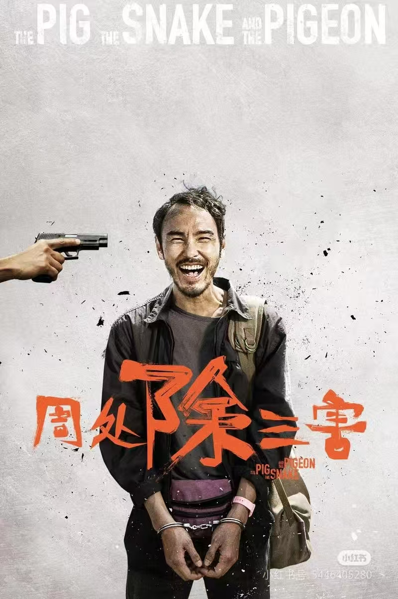
主角 / 通缉犯
现代台湾
发现自己名列通缉榜第三名，决定效仿"周处除三害"除掉前两名，却在过程中找到自我救赎。
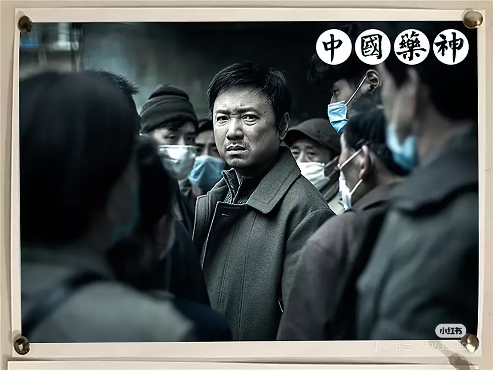
主角 / 印度神油店老板
现代中国
从印度走私仿制药的商人，从一开始为赚钱到最后为救人赔钱卖药，完成了从小人物到英雄的转变。
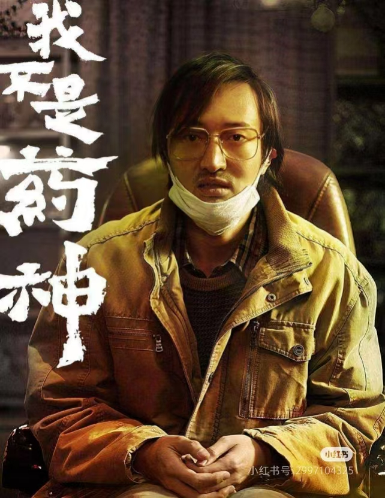
重要角色 / 白血病患者
现代中国
白血病患者，为了刚出生的儿子努力活下去，是程勇走上"药神"之路的引路人。
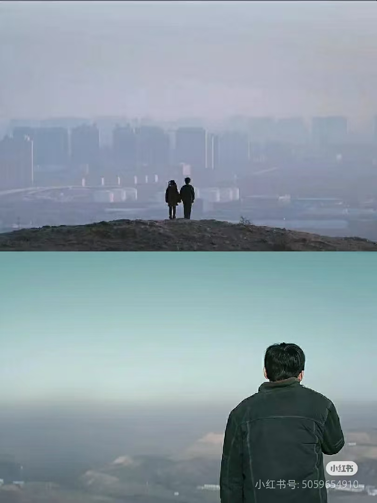
主角 / 哑巴矿工
现代中国
哑巴矿工，儿子突然失踪，在寻找儿子的过程中揭开了矿业公司的黑暗秘密。